EXOMINTS 2026 · Emulators team
Emulators From Scratch
A step-by-step course in building a neural-network emulator of FastChem equilibrium chemistry, from the first look at the training grid to a trained network in JAX.
What you will build
An emulator is a fast function, fitted to examples, that returns what an expensive code would return for the same inputs. Here the expensive code is FastChem with equilibrium condensation, which took between 0.1 and 3 seconds per model in our first tests (provisional timings, see Step 5). The emulator takes the six numbers that define a model (temperature, pressure, metallicity, and the C/O, S/O and N/O ratios) and returns 19 numbers (the log10 mixing ratios of 18 species and the mean molecular weight) in a fraction of a millisecond.
The course assumes that someone else provides the training grid, and uses the team's grid of 250,000 FastChem models. It follows five Jupyter notebooks, and each step on this page explains the ideas, shows the key code and figures, and names the notebook where you can run and change it. Everything is written in plain NumPy and JAX, without a machine-learning library hiding the details, so you can read every line that runs.
| Emulator | Size | Training | Median | 99th pct. |
|---|---|---|---|---|
| Training-set mean | 19 numbers | none | 9.5 | 15.4 |
| Polynomial, degree 5 | 462 terms per output | 5 s | 0.72 | 3.0 |
| Nearest neighbours, k = 8 | the whole training set | none | 0.29 | 3.0 |
| NumPy network, 2 × 64 | 5,843 weights | 9 s | 0.29 | 1.9 |
| JAX network, 3 × 256 | 138,259 weights | 4 min | 0.022 | 0.24 |
Errors in dex on the validation set, except the JAX row, which is the final test. Training times on an M1 Max laptop, CPU only.
Before you start
-
Get the code from the GitHub repository, either as a zip (the green Code button, then Download ZIP) or with git. It holds the five notebooks with their outputs, the
emulatorpackage, a trained emulator and the environment file.git clone https://github.com/luiswel/emulators-from-scratch.git -
Get the training grid from whoever provides it. For this course that is
training_250k.h5(464 MB, made with FastChem 4.0.4 by the team'schememgenerator), which goes in the top folder of the repository, next toREADME.md. The repository does not include it. To train on a grid of your own, changedata.load_grid, the only function that knows the file layout. -
Create the Python environment and open the notebooks:
cd emulators-from-scratch conda env create -f environment.yml conda activate emulator cd lessons jupyter labOn a Mac, the environment file asks for Apple's Accelerate library under NumPy. NumPy's default OpenBLAS and the pyfastchem wheel each bring their own copy of OpenMP, and Python crashes when both load. On Linux, delete the
libblasline fromenvironment.yml.
| Notebook | What it teaches | Run time |
|---|---|---|
01_the_data | the grid, sampling, the floor, transforms, splits | 10 s |
02_baselines | the mean, polynomials, nearest neighbours | 25 s |
03_numpy_network | a network and its gradients written by hand | 35 s |
04_jax_emulator | JAX, Adam, choosing settings, training | 6 min |
05_test_and_use | test errors, speed, atmosphere profiles | 30 s |
Run times on an M1 Max laptop, CPU only. The notebooks already contain their outputs, so you can read each one before running it.
Step 1 · lessons/01_the_data.ipynb
Look at the data first
Every emulator project starts by looking hard at the training data, because the shapes in it decide how hard the fit will be and which choices matter later.
What is in the grid
The file holds 250,000 FastChem models with condensation on and rainout off, so condensates form where they are stable but each model is a single parcel of gas. Six inputs define each model, all stored as logarithms: log10 T from 57 to 4000 K, log10 P from 10⁻⁶ to 10³ bar, [M/H] from −1 to +2, and log10 of C/O (0.1 to 1.5), S/O and N/O (0.001 to 0.5). The 19 outputs are the log10 mixing ratios of H, H2, H⁻, e⁻, He, H2O, CO, CO2, CH4, C2H2, Fe, TiO, SiO, HCN, NH3, N2, H2S and OH, floored at 10⁻³⁰, and log10 of the mean molecular weight. The file also assigns each model to a training, validation or test set of 200,000, 25,000 and 25,000 models.
from emulator import data
grid = data.load_grid("../training_250k.h5")
inputs = grid["inputs"] # (250000, 6)
outputs = grid["outputs"] # (250000, 19)The file's species_names field calls both H and H2 “Hydrogen”, so load_grid reads species_labels instead.
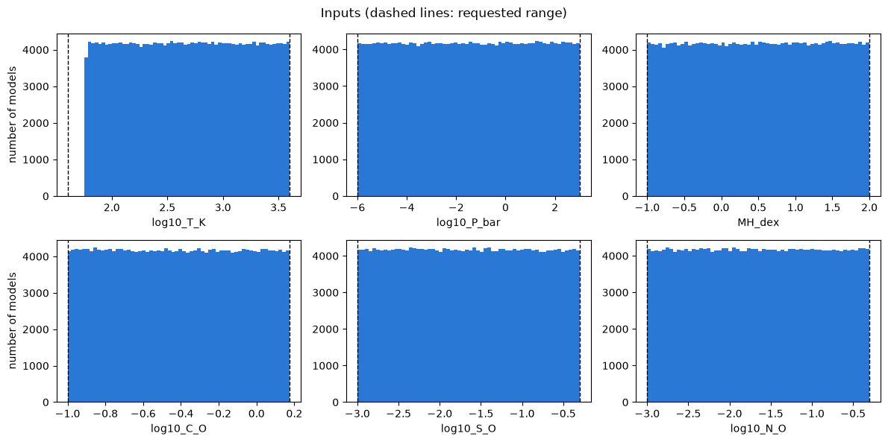
The histograms are flat because a Latin hypercube spreads the models evenly along every axis, giving each model its own value of every input. A regular grid with the same number of models would give each input only about eight distinct values (8⁶ ≈ 262,000). The temperature histogram stops at 57 K instead of the requested 40 K because FastChem failed for every attempt below that, so the emulator is only valid above about 60 K.
Even 250,000 models cover six dimensions thinly. A regular grid of that size would have 7.9 points per axis, so neighbouring models sit about 0.23 dex apart in temperature and 1.1 dex apart in pressure, and anything that changes faster than that (a condensation cliff, for example) is seen by only a few models. This is the curse of dimensionality, and filling these gaps sensibly is the emulator's job.
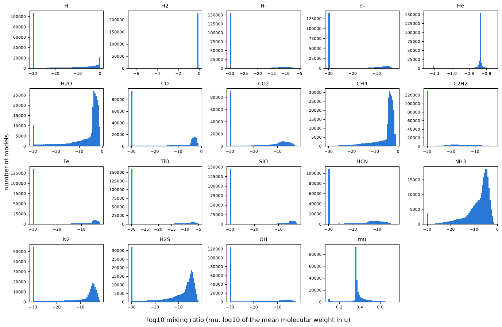
FastChem returns tiny numbers, or zero, for absent species, and the generator raised everything below 10⁻³⁰ to 10⁻³⁰. Nine species sit on this floor in 40 to 64% of the models. The network must therefore output exactly the floor over large regions and climb steeply off it elsewhere, and a network built from smooth functions finds sharp corners hard.
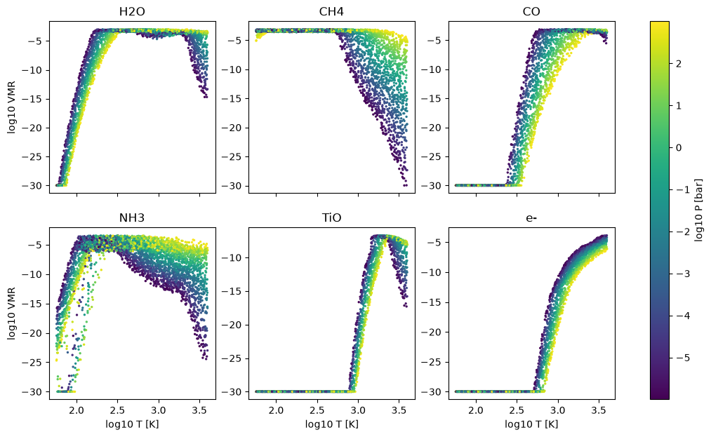
The plot shows the shapes the network has to learn. CH4 carries the carbon at low temperature and high pressure and CO at high temperature and low pressure, with the switch moving with pressure. H2O falls away where water condenses at the coldest temperatures, and again at the hottest temperatures and lowest pressures, where it breaks apart. TiO drops off a cliff onto the floor where titanium-bearing condensates form, NH3 condenses at the lowest temperatures and gives way to N2 as the temperature rises, and free electrons appear only at high temperature.
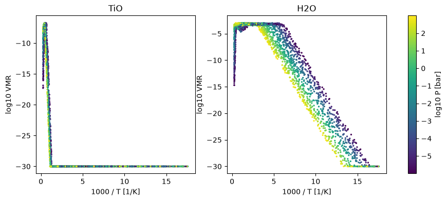
Below a condensation point the gas holds what the vapour pressure allows, and vapour pressures go as exp(−E/kT), so log10 VMR falls along a straight line in 1/T. The H2O cliff that looks curved against log T is straight here. The TiO panel shows the catch: the grid is uniform in log T, so everything hotter than about 800 K is squeezed into the left tenth of the axis. Step 4 tests which input works better.
Transform inputs and outputs
The network never sees these numbers directly. Each input is mapped onto [−1, 1] and each output is standardized:
The first layer of a network adds up weighted inputs, starting from random weights of similar size, so an input spanning nine units would otherwise drown one spanning one unit. After scaling, any value outside [−1, 1] also flags a point outside the training range. Standardizing the outputs puts all 19 on an equal footing in the loss, whereas without it TiO (spread of 9.3 dex) would dominate and the mean molecular weight (spread of 0.09 dex) would be ignored. Both transforms are fitted on the training set only and saved with the network weights, because they are part of the emulator.
indices = data.split_from_labels(grid["split"])
train, val = indices["train"], indices["val"]
input_transform = data.fit_input_transform(inputs[train])
output_transform = data.fit_output_transform(outputs[train], log10_floor=-15.0)
x_train = data.transform_inputs(inputs[train], input_transform)
y_train = data.transform_outputs(outputs[train], output_transform)The training set fits the weights, the validation set guides every choice (network size, learning rate, when to stop), and the test set is opened once, at the end, to report the final error. Using the split stored in the file means everyone's test numbers can be compared directly.
Exercises
- Plot H2S and HCN against temperature for the near-solar slice. Where does each one reach the floor?
- Repeat the slice at [M/H] = +2. How do the transitions move?
- What fraction of the training models are colder than 100 K, and is that enough to learn the NH3 cliff?
Step 2 · lessons/02_baselines.ipynb
Simple baselines to beat
Before building a network, find out what simple methods achieve. They show what a good error looks like for this data, and if a polynomial did as well as a network you would not need the network.
How we score an emulator
For each output we take |prediction − truth| in dex over the validation models, then the median (the typical error) and the 99th percentile (the bad cases), and average each over the 19 outputs. A model counts for a species only where the true or the predicted mixing ratio exceeds 10⁻¹², since no spectrum can tell values apart below that, and taking the larger of the two catches both a missed species and an invented one.
| Error in dex | 0.001 | 0.01 | 0.1 | 1 |
|---|---|---|---|---|
| Error in the mixing ratio | 0.2% | 2.3% | 26% | ×10 |
Predicting the training-set mean for every model gives a median error of 9.5 dex, which sets the scale of the problem.
Polynomials
A polynomial of degree d in six inputs is a weighted sum of every product of inputs up to total degree d. The weights enter linearly, so the least-squares solution is exact, with no iterations and no learning rate. The number of terms grows quickly with the degree: 7, 28, 84, 210 and 462 for degrees 1 to 5.
from emulator import baselines, evaluate
coefficients = baselines.fit_polynomial(x_train, y_train, degree=5)
y_pred = baselines.predict_polynomial(x_val, coefficients, degree=5)
log10_pred = data.inverse_transform_outputs(y_pred, output_transform)
print(evaluate.summary_errors(outputs[val], log10_pred))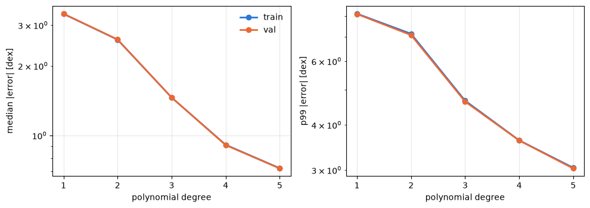
Training and validation errors are nearly identical, so the polynomial cannot memorize 200,000 models with a few hundred coefficients. Its error comes from limited flexibility, which is called underfitting, while overfitting would show as a training error well below the validation error. The gains also shrink with each degree, because a polynomial is global: to bend sharply at a condensation cliff it has to wiggle everywhere else.
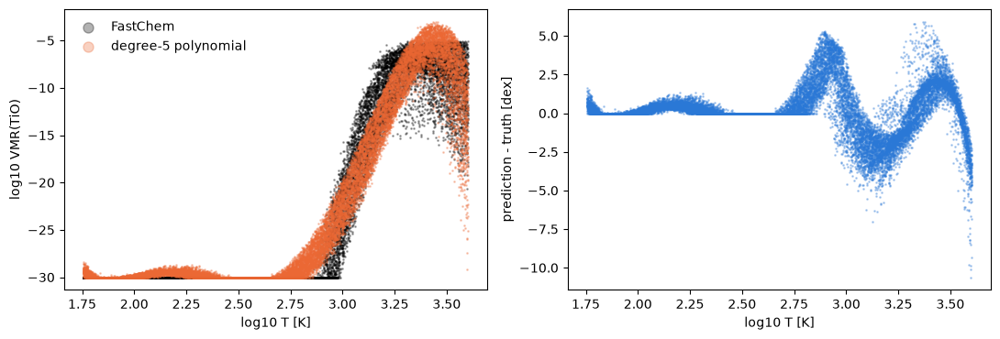
Nearest neighbours
Nearest neighbours takes the opposite approach. There is no global formula, and each prediction is an average of the eight training models closest to the requested point, weighted by 1/distance. This is close to interpolating in a precomputed table, which is how most retrieval codes handle equilibrium chemistry today. It reaches a median error of 0.29 dex without fitting anything, and the question is how fast that improves with more models.
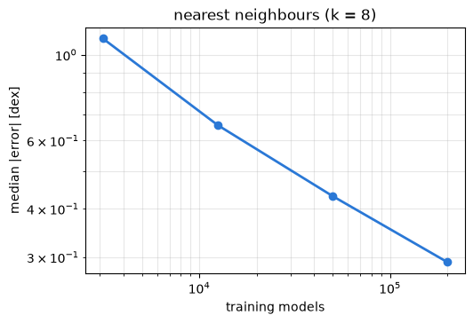
The error falls roughly as N−1/3. In six dimensions the spacing between neighbouring models shrinks only as N−1/6, and in smooth regions this kind of interpolation has an error that goes as the spacing squared. Halving the error takes eight times more models and a ten times smaller error takes a thousand times more, so tables grow large and slow long before they grow accurate.
Exercises
- Fit a degree-6 polynomial. How many terms, how long, and how much better?
- Try k = 4 and k = 16. Why does a large k make the error worse?
- Time a single nearest-neighbour prediction. Would it be fast enough for a retrieval that calls it a million times?
Step 3 · lessons/03_numpy_network.ipynb
A neural network from scratch
A polynomial adds up a fixed list of functions and only adjusts how much of each it uses. A neural network also adds up simple functions, but it adjusts the functions themselves (where each one switches, how steeply, and along which direction in input space), which lets it follow a cliff in one corner without wiggling everywhere else. Everything in this step is plain NumPy, in emulator/numpy_mlp.py.
One hidden layer in one dimension
Each hidden unit is a smooth step whose position is set by −b/w and whose steepness is set by w, and training adjusts every w, b, v and c. The figure fits a toy curve with the two features seen in Step 1, a small step and a cliff onto a floor.
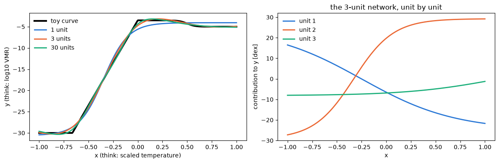
One unit can make one step, so it spends itself on the cliff and misses the small step near x = 0.5. Three units capture both, and thirty sharpen the corners. The units do not split the work the way you would by hand (two of them are large and partly cancel), because many sets of weights give nearly the same curve and training only has to find one of them.
The network for our data
Each row of x is one model. With two hidden layers of 64 units, W1 is 6 × 64, W2 is 64 × 64 and W3 is 64 × 19, which makes 5,843 numbers to describe 3.8 million training values. The output layer has no tanh so that the outputs can take any value. The weights start random, drawn with a spread of 1/√(inputs to the layer) so that the signal keeps its size from layer to layer.
The loss is a likelihood
Up to a constant, the mean squared error is minus the log-likelihood of Gaussian errors with σ = 1 in standardized units. Training a network is therefore maximum-likelihood fitting, with thousands of parameters and no closed-form solution because the model is not linear in its parameters.
Backpropagation
The gradient of the loss comes from the chain rule, applied layer by layer from the output back. Write z = aW + b for a layer's value before the tanh and δ = ∂L/∂z:
The last line uses d tanh(z)/dz = 1 − tanh²(z). In code, from numpy_mlp.backward:
delta = 2.0 * (y_pred - y_true) / y_true.size
grads = [None] * len(params)
for index in reversed(range(len(params))):
a_in = activations[index]
grads[index] = {"W": a_in.T @ delta, "b": delta.sum(axis=0)}
if index > 0:
delta = (delta @ params[index]["W"].T) * (1.0 - a_in**2)Hand-written gradients are easy to get wrong, so the notebook checks them against finite differences, nudging each of the 154 weights of a tiny network up and down by 10⁻⁶. The two agree to about 10⁻⁹.
Gradient descent
Each step uses the gradient of a random mini-batch of 256 models rather than all 200,000, which gives a noisy but unbiased estimate and about 780 steps per pass through the data (an epoch). Twenty epochs of this stochastic gradient descent take 9 seconds and reach a median error of 0.29 dex and a 99th percentile of 1.9 dex, matching nearest neighbours on the typical error and beating every baseline on the bad cases.
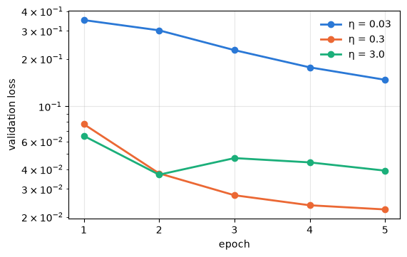
The learning rate η is the most important setting in training. At 0.03 the loss creeps down, while at 3 each step jumps across the valley instead of down it, so the loss stalls and bounces.
Exercises
- Replace tanh by ReLU, max(0, z). Change the activation in
forwardand its derivative inbackward(1 where z > 0 and 0 elsewhere), then run the gradient check before training. - Make the hidden layers 16 or 128 units wide. How do the training time and the error change?
- Add momentum to
train_sgd(v ← 0.9v − ηg, then θ ← θ + v). Does it train faster?
Step 4 · lessons/04_jax_emulator.ipynb
The emulator in JAX
The NumPy network learns, but slowly, and every new idea means deriving a new backward pass. Three upgrades fix this: JAX computes the gradients and compiles the code, Adam replaces plain gradient descent, and the learning rate decays during training. Short runs then settle the settings one at a time before a single long run trains the final emulator.
JAX in three ideas
The module jax.numpy mirrors NumPy, so the forward pass and the loss are the NumPy functions with np replaced by jnp. The function jax.grad turns a function into its gradient, so jax.grad(loss_fn) is the whole backward pass, and it agrees with the hand-written one to 10⁻⁷, the precision of the float32 numbers JAX uses by default. The function jax.jit compiles a function on its first call, which on a laptop CPU makes a gradient step about twice as fast.
import jax
from emulator import jax_mlp
params = jax_mlp.init_params([6, 256, 256, 256, 19], seed=0)
gradients = jax.grad(jax_mlp.loss_fn)(params, x_batch, y_batch)Adam
Plain gradient descent uses one step size for every weight, although some gradients are a thousand times larger than others. Adam keeps two running averages for each weight, of the gradient and of its square, and divides one by the square root of the other, so every weight moves by about the learning rate per step whatever the size of its gradient:
Here m̂ and v̂ are m and v corrected for starting at zero, with β1 = 0.9 and β2 = 0.999, and adam_update writes this out in a dozen lines.
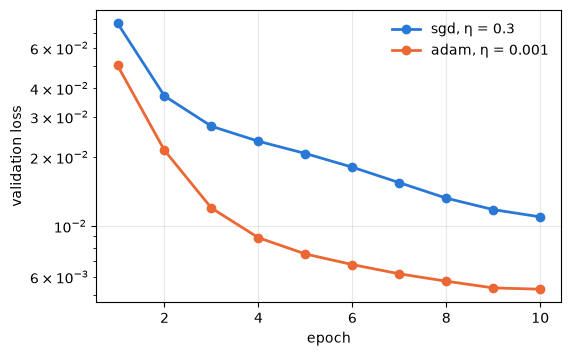
Adam reaches in three epochs what SGD reaches in ten. During training the learning rate follows half a cosine from 10⁻³ to 10⁻⁵, taking large steps early and settling into the minimum late, and the training loop keeps the weights with the lowest validation loss.
Choose settings with short runs
Changing one thing at a time and comparing validation errors after 40 epochs (about 30 seconds per run) tests two ideas from Step 1:
| Variant (3 × 256 network, 40 epochs) | Median | 99th pct. |
|---|---|---|
| Floor 10⁻³⁰, log10 T as input | 0.083 | 0.74 |
| Floor raised to 10⁻¹⁵ | 0.056 | 0.55 |
| 1000/T instead of log10 T | 0.157 | 1.30 |
Raising the floor helps, because the species that spend half the grid on the floor now have a smaller spread, so the loss attends to the part of their range that matters and the cliffs are shorter. Using 1000/T doubles the error even though the physics is simpler in 1/T, because the grid is uniform in log T and 1/T squeezes the hot models into a tenth of the input range. Whether a transform helps depends on the data as well as the physics, which is why every idea gets a short run.
Train the final emulator
params = jax_mlp.init_params([6, 256, 256, 256, 19], seed=0)
params, history = jax_mlp.train(
params,
x_train,
y_train,
x_val,
y_val,
n_epochs=300,
batch_size=1024,
lr_start=1e-3,
lr_end=1e-5,
)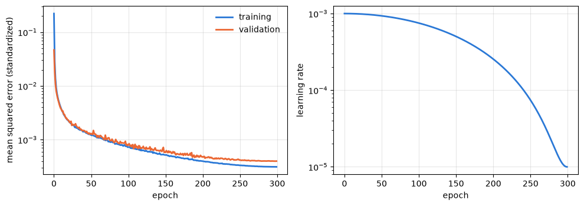
The run takes four minutes on a laptop CPU. The two losses separate slowly after about 50 epochs and the validation loss ends about 30% above the training loss, which is mild overfitting that does no harm here because the validation loss keeps falling to the last epoch. The validation errors reach a median of 0.022 dex and a 99th percentile of 0.25 dex, thirteen times better than nearest neighbours on the typical error.
Save it
The emulator is the weights plus the input and output transforms, and forgetting the transforms is the most common emulator bug. save_emulator writes all of it into one 559 kB file of plain NumPy arrays, against 464 MB for the grid.
jax_mlp.save_emulator(
"../runs/emulator.npz",
params,
input_transform,
output_transform,
grid["input_names"],
grid["output_names"],
activation="tanh",
)Exercises
- Make the network wider (512 units) or deeper (four hidden layers) in a 40-epoch run. Which helps more per second of training?
- Try a floor of 10⁻²⁰. Where between −30 and −15 do the gains come from?
- Change the batch size to 256 and to 4096 with the same number of epochs. What happens to the time per epoch and to the error?
Step 5 · lessons/05_test_and_use.ipynb
Test it, then use it
TrainedEmulator loads the saved file and evaluates the network with NumPy alone, so it runs inside any retrieval code with NumPy, including Python 3.8 environments without JAX.
from emulator.trained import TrainedEmulator
emulator = TrainedEmulator("../runs/emulator.npz")
log10_values = emulator.predict_log10(features) # features: (n_layers, 6)The final test
On the 25,000 test models, which played no part in any choice, the median error is 0.022 dex and the 99th percentile 0.24 dex, the same as on the validation set. Per species, the median ranges from 0.0002 dex for He to 0.049 dex for H2S, and the 99th percentile stays below 0.4 dex for every output except C2H2 (0.6 dex) and H2S (1.0 dex). The mean molecular weight, which sets the scale height, is good to 0.0005 dex (0.1%).
Where it struggles
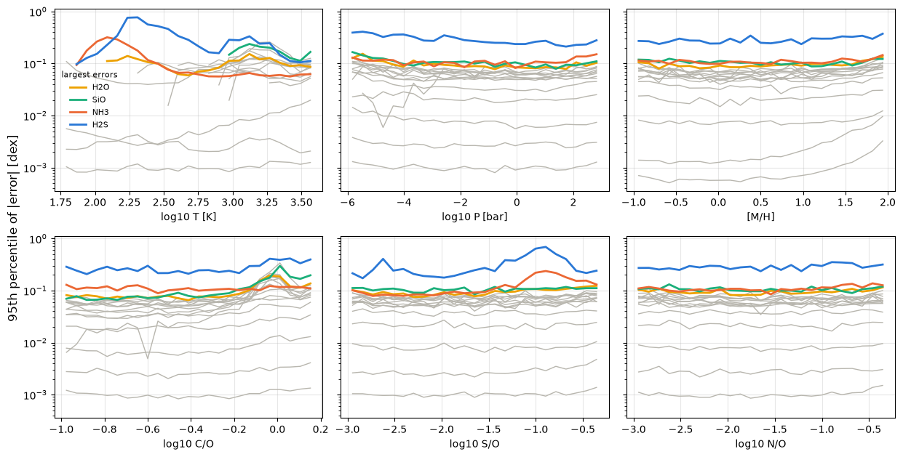
The largest errors sit next to the floor, where a species switches on or off and the network has to turn a sharp corner. H2S is the hardest output, with its error largest below about 250 K and near S/O ≈ 0.1. The grid file shows why: below about 700 K most of the sulfur condenses, mainly as FeS with FeS2, Ni3S2 and MnS, so the H2S left in the gas is set by a series of sulfide condensates, each adding a kink. All ten worst test predictions are H2S or NH3 colder than 225 K, with errors of 3.6 to 5.8 dex.
Speed
These FastChem timings are provisional. They come from the pyfastchem 4.0.4 wheel installed with pip, a build from source is being checked against them, and the speed-up factors below may change. The emulator's accuracy does not depend on them.
| 100-layer atmosphere, M1 Max laptop | Wall-clock time |
|---|---|
| FastChem with condensation (as in the grid) | 2.0 s |
| FastChem, gas phase only | 0.083 s |
| Emulator | 0.0004 s |
The emulator is about 5,000 times faster than FastChem with condensation and 200 times faster than gas-phase FastChem. FastChem ran the 100 layers in parallel on all cores and the emulator in one NumPy call. A single FastChem model takes a few milliseconds in the gas phase above 300 K, and with condensation about 0.1 s above 1000 K and up to 3 s below 300 K, because the condensation solver needs hundreds of iterations (the grid file records a median of 155).
Atmosphere profiles
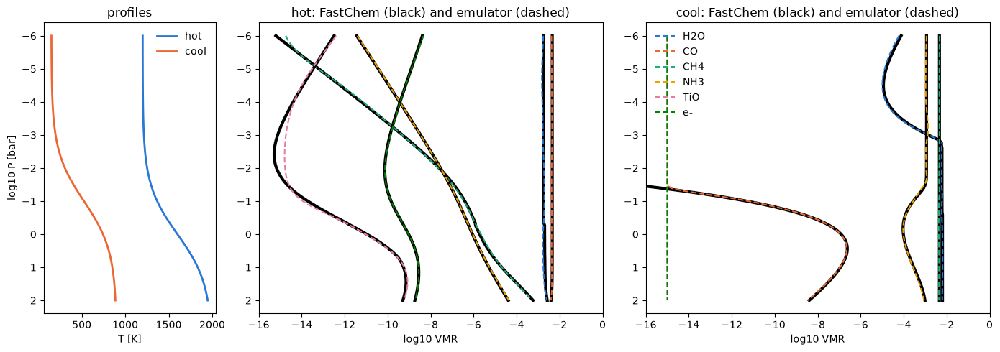
Neither profile appears in the training set. The emulator follows FastChem through the CO–CH4 switch, the condensation of water at the top of the cool profile and the changing balance between NH3 and N2. The one visible departure is TiO near 5 mbar in the hot profile, where FastChem drops below 10⁻¹⁵ and the emulator stops at the floor it was trained with. For a point outside the training range, such as a 40 K layer, the emulator raises an error instead of returning a number.
Accuracy needed for retrievals
JWST retrievals typically constrain abundances to 0.1 to 0.5 dex, so a typical emulator error of a few hundredths of a dex adds little. The tails matter more, since a 1-dex error at a cliff could bias a retrieval that happens to sit there. The first improvements to try are training longer or wider, since the loss was still falling, and adding FastChem models near the cliffs. After those come an ensemble of networks trained from different seeds, whose spread also estimates the emulator's own error at each point, a check of how far the outputs break element conservation, and JAX's gradients for gradient-based samplers.
Exercises
- Train a second network with
seed=1and average the two. How much do the errors drop, and where do the networks disagree most? - Make a profile for a 2500 K ultra-hot Jupiter and compare it with FastChem. Which species is hardest?
- Use
TrainedEmulatorfrom a Python 3.8 environment without JAX.
Building your own emulator
The same steps carry over to any expensive code, whether a chemistry solver, a radiative-transfer model or a cloud model.
- Choose the inputs and their ranges, and sample them with a Latin hypercube or a Sobol sequence, which give every model its own value of every input. Keep the solver's convergence flags and drop the failed models.
- Set aside a test set that no choice ever touches, and agree on it with your team.
- Take logs of anything that spans orders of magnitude, scale the inputs to [−1, 1] and standardize the outputs, fitting the transforms on the training set and saving them with the weights.
- Decide what error matters in the units of the science (here dex, above a detectability threshold) and score every method that way.
- Fit a polynomial and nearest neighbours first, so you know what the network has to beat.
- Start with a small network (two or three hidden layers of tanh units), Adam with a decaying learning rate and batches of about a thousand models, and keep the weights with the best validation loss.
- Change one thing at a time in short runs: the floor, how the inputs are presented, the width and depth, the activation.
- Train long once, open the test set once, and look for where the errors concentrate, then add models there or average several networks.
- Check every input against the training range and refuse to extrapolate.
Notes on this grid
These come from runs on the grid's own validation set, with errors measured as in Step 2.
- Train on a floor of 10⁻¹⁵ rather than the grid's 10⁻³⁰. In 40-epoch runs the median error fell from 0.083 to 0.056 dex, and in 60-epoch runs the worst case fell from 14 to 8.7 dex. A floor of 10⁻²⁰ sits in between, and floors above 10⁻¹⁵ are untested.
- Keep log10 T as the temperature input, because 1000/T roughly doubled the error and feeding both gave the same error as log T alone.
- tanh beat SiLU in the one comparison we ran (60 epochs with 1/T inputs, median 0.093 against 0.148 dex).
- Training for 300 epochs halved the median error of a 60-epoch run and the loss was still falling, so a wider network (512 units per layer) is the next thing to try.
- H2S below about 700 K is the hardest output, because sulfur condenses into a series of sulfides that each add a kink, and the ten worst test predictions are all H2S or NH3 colder than 225 K.
- FastChem with condensation and the grid's settings takes about 0.1 s per model above 1000 K, about 1 s between 300 and 1000 K and about 3 s below 300 K on one core, whereas gas-phase chemistry alone takes a few milliseconds per model above 300 K. FastChem's default tolerances give the same times. These timings are provisional (see Speed in Step 5).
- The grid is valid only above about 57 K, because every FastChem attempt below that failed.
Appendix
The maths of training, in matrices
This appendix collects the linear algebra behind Steps 1 to 4 for the final network, which has three hidden layers of 256 units. Each piece links to the function in the emulator package that computes it.
The transforms
For each input column j the training set gives a minimum lj and a maximum uj, and for each output column k the mean μk and standard deviation σk of the floored log10 values. Model i is then transformed as
Both are affine maps applied column by column, and fitting them means computing l, u, μ and σ and nothing more (fit_input_transform, fit_output_transform). The inverse, y = σk y′ + μk followed by the floor, turns network outputs back into log10 mixing ratios (inverse_transform_outputs).
The forward pass
Here X′ is a batch of B models (B × 6), 𝟙 is a column of B ones so that each bias is added to every row, W1 is 6 × 256, W2 and W3 are 256 × 256, W4 is 256 × 19, and tanh acts element by element. The parameters θ = {W1, b1, …, W4, b4} hold 138,259 numbers, and a forward pass costs about 275,000 floating-point operations per model (jax_mlp.forward).
The loss
If every standardized output carried independent Gaussian errors of unit variance, −log p(Y′ | θ) would equal (19B/2) L(θ) plus a constant, so minimizing L is maximum-likelihood estimation of θ (jax_mlp.loss_fn).
Why the polynomial has a formula and the network does not
The degree-5 polynomial predicts Ŷ = ΦC, where Φ is the N × 462 matrix of monomials of the inputs and C the 462 × 19 matrix of coefficients. The loss is quadratic in C, and setting its gradient to zero gives the normal equations
which numpy.linalg.lstsq solves through the singular value decomposition Φ = UΣVT, as C = VΣ+UTY′, without forming ΦTΦ and squaring its condition number (baselines.fit_polynomial). The network's output depends on W1, W2 and W3 through the tanh, so L(θ) is neither quadratic nor convex and has no such formula, and the minimum has to be found by following the gradient downhill.
Backpropagation
Take one layer, Z = AW + 𝟙bT, and write Δ = ∂L/∂Z for the gradient of the loss with respect to the layer's values before the tanh. In index notation Zij = Σk Aik Wkj + bj, so the chain rule gives
The activation A = tanh(Z) acts element by element with derivative 1 − tanh²(Z) = 1 − A², so the gradient passes through it as ∂L/∂Z = (∂L/∂A) ⊙ (1 − A²), where ⊙ is the element-wise product. Starting at the loss and working back through the four layers:
Each layer needs two matrix products of the same size as its forward product, so the whole gradient costs about two forward passes, against two forward passes per parameter (276,518 per step) for finite differences. This is reverse-mode differentiation, the efficient direction when one scalar loss depends on many parameters. numpy_mlp.backward writes these lines out by hand, and jax.grad builds the same products automatically from the forward code.
Mini-batches
The loss over the training set is the average of the per-model losses, so the gradient computed on a batch drawn uniformly at random is an unbiased estimate of the full gradient, with a variance that falls as 1/B. Batches of 1,024 models give 195 updates per pass through the 200,000 training models, where the full gradient would give one.
Adam
Here gt is the batch gradient at step t, every operation acts element by element, and β1 = 0.9, β2 = 0.999, ε = 10⁻⁸. The moving averages m and v of the gradient and its square remember about 1/(1 − β) steps, 10 and 1,000. Starting both at zero biases them low by a factor 1 − βt in the first steps, which the hats remove. The ratio m̂/√v̂ is close to ±1 for a weight whose gradient keeps its sign and smaller for one whose gradient keeps flipping, so each weight moves by at most about ηt per step whatever the scale of its gradient (jax_mlp.adam_update). The learning rate follows
for epoch e out of E = 300, from ηstart = 10⁻³ to ηend = 10⁻⁵ (jax_mlp.cosine_learning_rate).
Initialization
Each weight starts as an independent draw from a normal distribution with mean zero and variance 1/nin, where nin is the number of inputs to the layer, and each bias starts at zero (numpy_mlp.init_params). A unit computes z = Σk ak wk over nin inputs, so Var(z) = nin · (1/nin) · E[a²] = E[a²], and the signal keeps its size from layer to layer instead of growing or shrinking geometrically with depth.
The algorithm
- Fit the transforms on the training set and apply them to all three sets.
- Draw the starting weights.
- For each of 300 epochs, shuffle the training models and cut them into 195 batches of 1,024. For each batch, run the forward pass, the loss, backpropagation and one Adam step with that epoch's learning rate, all inside one compiled function (
jax_mlp.make_train_step). - After each epoch, compute the loss on the 25,000 validation models and keep the weights if that loss is the lowest so far.
- Save the kept weights together with the transforms (
jax_mlp.save_emulator).
That makes 58,500 Adam steps, about four minutes on a laptop CPU (jax_mlp.train). Gradient descent on a non-convex loss carries no guarantee of reaching the global minimum, which is why the validation and test errors decide whether the emulator is good enough.
Glossary
- dex
- A difference in log10. 0.01 dex is 2.3%, 0.1 dex is 26%, 1 dex a factor of 10.
- Floor
- The smallest value kept, with anything below it raised to it.
- Standardize
- Subtract the mean and divide by the standard deviation.
- Epoch
- One pass through the training set.
- Mini-batch
- The models used for one gradient step.
- Learning rate
- The step size of the optimizer.
- Loss
- The number training minimizes, here the mean squared error of the standardized outputs.
- Activation
- The nonlinear function in each hidden unit, here tanh.
- Backpropagation
- Computing the gradient of the loss layer by layer with the chain rule.
- Adam
- Gradient descent with a separate, automatically scaled step size for every weight.
- Overfitting
- A training error well below the validation error, because the network memorizes the training set.
- Underfitting
- Both errors high, because the network is not flexible enough or not trained long enough.
- Latin hypercube
- A sampling design that spreads points evenly along every input axis.